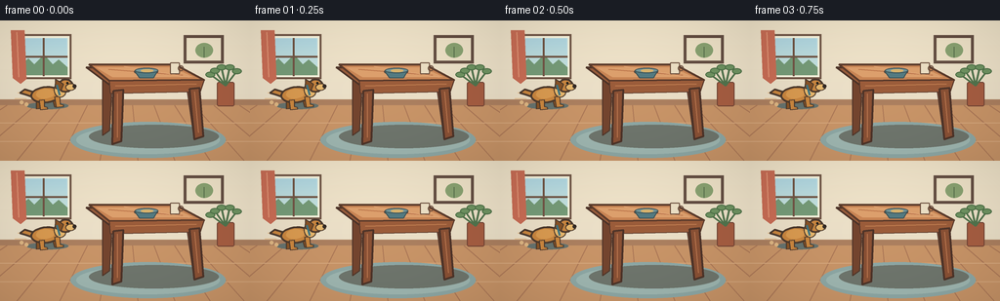
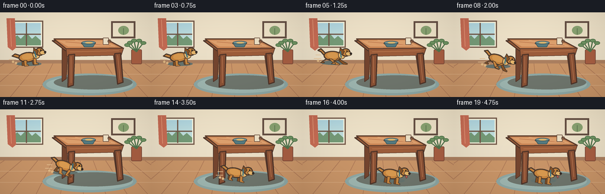

CODING AGENTS AS PIXEL WORLD MODELS
traex/GPT-5.6-Sol · dynamic_spatial_relationship_0000
点击播放 · 原生 RGB 像素
逐轮保存的候选
回放视频、检查图与代码变化。
每份候选均可单独播放。实际图片检查记录在下方工具轨迹中。
候选 01播放与检查图
点击播放 · 原生 RGB 像素


展开代码变化
--- 上一保存版本
+++ 本次保存版本
@@ -0,0 +1,200 @@
+from pathlib import Path
+import math, random
+import numpy as np
+from PIL import Image, ImageDraw, ImageFilter
+import artifact_io
+
+W,H,N=256,144,20
+S=4
+random.seed(12)
+
+def sc(v): return int(round(v*S))
+def pts(arr): return [(sc(x),sc(y)) for x,y in arr]
+
+def ellipse(d, box, fill, outline=None, width=1):
+ d.ellipse(tuple(sc(v) for v in box), fill=fill, outline=outline, width=sc(width) if outline else 1)
+def polygon(d, p, fill, outline=None, width=1):
+ d.polygon(pts(p), fill=fill)
+ if outline: d.line(pts(p+[p[0]]), fill=outline, width=sc(width), joint='curve')
+def line(d,p,fill,width=1): d.line(pts(p), fill=fill, width=sc(width), joint='curve')
+def rect(d,b,fill,outline=None,width=1,r=0):
+ bb=tuple(sc(v) for v in b)
+ if r: d.rounded_rectangle(bb, radius=sc(r), fill=fill, outline=outline, width=sc(width))
+ else: d.rectangle(bb,fill=fill,outline=outline,width=sc(width) if outline else 1)
+
+def base_scene():
+ im=Image.new('RGB',(W*S,H*S),(239,224,196)); d=ImageDraw.Draw(im)
+ # softly banded plaster wall
+ for y in range(sc(0),sc(85)):
+ yy=y/S
+ c=(242-int(yy*.10),229-int(yy*.08),202-int(yy*.04))
+ d.line([(0,y),(W*S,y)],fill=c)
+ # left window and daylight
+ rect(d,(16,14,73,60),'#f8f4dd','#725747',2)
+ rect(d,(20,18,69,56),'#bfe1e7')
+ # sky gradient strips
+ for yy in range(19,55):
+ col=(178+int((yy-19)*.7),216+int((yy-19)*.35),225-int((yy-19)*.15))
+ d.line([(sc(21),sc(yy)),(sc(68),sc(yy))],fill=col,width=sc(1))
+ # distant greenery
+ polygon(d,[(20,46),(29,39),(35,45),(45,35),(54,45),(60,40),(69,48),(69,56),(20,56)],'#769b78')
+ line(d,[(44.5,18),(44.5,57)],'#725747',2); line(d,[(20,37),(69,37)],'#725747',2)
+ # curtain
+ polygon(d,[(11,10),(25,10),(27,60),(21,65),(13,59)],'#c96d55')
+ line(d,[(17,12),(19,58)],'#e59a79',1)
+ # wall picture
+ rect(d,(188,15,229,44),'#654f43')
+ rect(d,(191,18,226,41),'#efe3c8')
+ ellipse(d,(200,23,218,38),'#8aa372')
+ line(d,[(209,38),(209,27)],'#5b734d',1)
+ # baseboard and floor
+ rect(d,(0,81,256,87),'#ac8060')
+ polygon(d,[(0,87),(256,87),(256,144),(0,144)],'#c99568')
+ # floorboards perspective
+ for x in [-80,-30,17,61,102,141,179,215,250,285,330]:
+ line(d,[(128+(x-128)*.58,87),(x,144)],'#ad7958',1)
+ for y in [105,124]: line(d,[(0,y),(256,y)],'#d6a77c',1)
+ # rug under table, muted blue oval
+ ellipse(d,(72,104,231,141),'#8ea8a5')
+ ellipse(d,(78,108,225,137),'#9fb7b1')
+ # plant behind table
+ rect(d,(222,63,240,88),'#a75e42','#744536',1,r=2)
+ for a in [-1.2,-.7,-.25,.25,.75]:
+ x=231+math.sin(a)*17; y=46+abs(a)*8
+ line(d,[(231,67),(x,y)],'#52744d',2)
+ ellipse(d,(x-5,y-3,x+5,y+3),'#6f9462','#4d7047',1)
+ return im
+
+BASE=base_scene()
+
+def draw_table(im):
+ d=ImageDraw.Draw(im)
+ # cast shadow
+ ellipse(d,(91,107,224,131),'#6f766d')
+ # rear legs
+ polygon(d,[(105,60),(115,60),(112,113),(105,118)],'#74452f','#4e3429',1)
+ polygon(d,[(190,60),(199,62),(205,112),(198,116)],'#74452f','#4e3429',1)
+ # top, bevel and apron: clear central object
+ polygon(d,[(88,48),(178,48),(207,65),(112,66)],'#9a5d3b','#4d3429',2)
+ polygon(d,[(91,45),(179,45),(209,61),(112,62)],'#c98555','#5b3b2b',2)
+ polygon(d,[(98,48),(177,48),(198,58),(115,58)],'#dda06d')
+ # wood grain
+ line(d,[(111,50),(187,56)],'#b87048',1)
+ line(d,[(127,47),(194,58)],'#e1a777',1)
+ # front apron
+ polygon(d,[(112,62),(209,61),(205,73),(113,75)],'#9c5d3b','#57382b',1)
+ line(d,[(118,67),(201,65)],'#c48153',1)
+ # front legs
+ polygon(d,[(116,72),(126,71),(124,124),(115,127)],'#8a5135','#4e3429',2)
+ polygon(d,[(194,70),(204,69),(208,119),(199,122)],'#8a5135','#4e3429',2)
+ # feet highlights
+ line(d,[(120,75),(120,120)],'#b8754e',1)
+ line(d,[(199,73),(203,115)],'#b8754e',1)
+ # simple bowl and cup on tabletop
+ ellipse(d,(137,49,162,56),'#e7d1a8','#644638',1)
+ polygon(d,[(138,52),(161,52),(157,59),(143,59)],'#547b82','#3f5558',1)
+ ellipse(d,(138,48.5,162,54),'#73979b','#3f5558',1)
+ ellipse(d,(144,50,157,53),'#d9b46d')
+ rect(d,(174,43,184,55),'#ede0c5','#694c3b',1,r=1)
+ ellipse(d,(182,46,188,52),None,'#694c3b',1)
+
+def tr_point(x,y,cx,cy,ang):
+ ca,sa=math.cos(ang),math.sin(ang)
+ return (cx+x*ca-y*sa, cy+x*sa+y*ca)
+
+def tpoly(d, arr,cx,cy,ang,fill,outline='#51382c',width=1):
+ polygon(d,[tr_point(x,y,cx,cy,ang) for x,y in arr],fill,outline,width)
+def tellipse(draw, box,cx,cy,ang,fill,outline=None,width=1):
+ # draw ellipse in local highres layer then rotate via polygon-ish sampled ellipse for clean arbitrary angle
+ x0,y0,x1,y1=box; mx=(x0+x1)/2; my=(y0+y1)/2; rx=(x1-x0)/2; ry=(y1-y0)/2
+ p=[tr_point(mx+rx*math.cos(i*2*math.pi/30),my+ry*math.sin(i*2*math.pi/30),cx,cy,ang) for i in range(30)]
+ polygon(draw,p,fill,outline,width)
+
+def draw_dog(im,cx,cy,phase,ang,settled=False):
+ d=ImageDraw.Draw(im)
+ outline='#4b392d'; gold='#c9863f'; light='#e7b76c'; dark='#875326'
+ # ground shadow follows dog
+ ellipse(d,(cx-21,cy+6,cx+22,cy+13),'#66736e')
+ # speed streaks and dust only while running
+ if not settled and phase>0.05:
+ for j in range(2):
+ yy=cy-4+j*6
+ line(d,[(cx-30-j*3,yy),(cx-21,yy)],'#e6c294',1)
+ for j in range(2):
+ ellipse(d,(cx-23-j*5,cy+6-j*2,cx-19-j*5,cy+10-j*2),'#dfb783')
+ stride=math.sin(phase*2*math.pi)
+ lift=abs(math.sin(phase*2*math.pi))
+ # tail behind, wagging
+ wag=math.sin(phase*2*math.pi+1.2)*3
+ tail=[(-14,-6),(-22,-12+wag),(-27,-9+wag),(-22,-7+wag),(-15,-1)]
+ tpoly(d,tail,cx,cy,ang,gold,outline,2)
+ # far legs first, readable gallop cycle
+ if settled:
+ legs=[(-9,3,-9,11),(7,3,8,11)]
+ else:
+ legs=[(-9,2,-14+6*stride,10-lift*2),(7,2,13-6*stride,10-lift*2)]
+ for x0,y0,x1,y1 in legs:
+ p=[(x0-2,y0),(x0+3,y0),(x1+2,y1),(x1+5,y1+1),(x1+5,y1+3),(x1-2,y1+3)]
+ tpoly(d,p,cx,cy,ang,dark,outline,1)
+ # body
+ tellipse(d,(-16,-10,14,6),cx,cy,ang,gold,outline,2)
+ tellipse(d,(-11,-8,8,2),cx,cy,ang,'#d99a50',None)
+ # near legs, opposite stride
+ if settled:
+ legs2=[(-5,3,-4,12),(10,2,11,11)]
+ else:
+ legs2=[(-6,3,-1-7*stride,11-lift*1.5),(10,1,6+7*stride,10-lift*1.5)]
+ for x0,y0,x1,y1 in legs2:
+ p=[(x0-2,y0),(x0+3,y0),(x1+2,y1),(x1+5,y1+1),(x1+5,y1+3),(x1-2,y1+3)]
+ tpoly(d,p,cx,cy,ang,gold,outline,1)
+ # neck and head at leading side
+ tellipse(d,(8,-13,20,2),cx,cy,ang,light,outline,1)
+ tellipse(d,(13,-16,27,-3),cx,cy,ang,gold,outline,2)
+ # floppy ear
+ tpoly(d,[(14,-14),(10,-17),(9,-8),(15,-5),(18,-11)],cx,cy,ang,dark,outline,1)
+ # muzzle
+ tellipse(d,(20,-11,30,-4),cx,cy,ang,light,outline,1)
+ tellipse(d,(27,-10,31,-6),cx,cy,ang,'#332a25',None)
+ # eye
+ ex,ey=tr_point(22,-12,cx,cy,ang)
+ ellipse(d,(ex-1.1,ey-1.1,ex+1.1,ey+1.1),'#211f1b')
+ # collar
+ line(d,[tr_point(11,-11,cx,cy,ang),tr_point(13,0,cx,cy,ang)],'#3d7483',2)
+ # happy tongue when settled
+ if settled:
+ tpoly(d,[(24,-4),(27,-2),(25,1),(23,-3)],cx,cy,ang,'#d66d67','#6e3f38',1)
+
+def smoothstep(x): return x*x*(3-2*x)
+
+frames=[]
+for i in range(N):
+ im=BASE.copy()
+ draw_table(im)
+ # clear initial hold, purposeful curved run, clear final hold
+ if i<=3:
+ u=0.0
+ elif i>=16:
+ u=1.0
+ else:
+ u=smoothstep((i-3)/13)
+ # cubic Bezier: left of table -> foreground/front of table
+ p0=np.array([48.,78.]); p1=np.array([70.,76.]); p2=np.array([105.,104.]); p3=np.array([151.,112.])
+ pos=(1-u)**3*p0+3*(1-u)**2*u*p1+3*(1-u)*u*u*p2+u**3*p3
+ # running bob, absent on holds
+ running=(i>3 and i<16)
+ if running: pos[1]-=1.8*abs(math.sin((i-3)*math.pi*.72))
+ # tangent angle, subtly downward in screen plane
+ tangent=3*(1-u)**2*(p1-p0)+6*(1-u)*u*(p2-p1)+3*u*u*(p3-p2)
+ ang=math.atan2(tangent[1],tangent[0])
+ phase=(i-3)*0.38 if running else (0.12 if i<=3 else 0.0)
+ draw_dog(im,float(pos[0]),float(pos[1]),phase,ang,settled=(i>=16))
+ # gentle final camera-independent warm light vignette
+ im=im.resize((W,H),Image.Resampling.LANCZOS)
+ arr=np.asarray(im).astype(np.float32)
+ yy,xx=np.mgrid[:H,:W]
+ vign=1-0.06*((xx-W/2)/(W/2))**2-0.05*((yy-H/2)/(H/2))**2
+ arr*=vign[...,None]
+ frames.append(np.clip(arr,0,255).astype(np.uint8))
+
+frames=np.stack(frames,axis=0)
+artifact_io.save(frames,Path(__file__).resolve().parent)
可观测工具轨迹
实际执行的命令与返回图片。
命令 1exit 0
/bin/bash -lc "ls -la && printf '\\n--- prompt.txt ---\\n' && cat prompt.txt && printf '\\n--- GENERATION_RULES.md ---\\n' && cat GENERATION_RULES.md && printf '\\n--- task_spec.json ---\\n' && cat task_spec.json"
命令 2exit 0
/bin/bash -lc "sed -n '1,260p' artifact_io.py"
命令 3exit 0
/bin/bash -lc "cat > generate.py <<'PY'
from pathlib import Path
import math, random
import numpy as np
from PIL import Image, ImageDraw, ImageFilter
import artifact_io
W,H,N=256,144,20
S=4
random.seed(12)
def sc(v): return int(round(v*S))
def pts(arr): return [(sc(x),sc(y)) for x,y in arr]
def ellipse(d, box, fill, outline=None, width=1):
d.ellipse(tuple(sc(v) for v in box), fill=fill, outline=outline, width=sc(width) if outline else 1)
def polygon(d, p, fill, outline=None, width=1):
d.polygon(pts(p), fill=fill)
if outline: d.line(pts(p+[p[0]]), fill=outline, width=sc(width), joint='curve')
def line(d,p,fill,width=1): d.line(pts(p), fill=fill, width=sc(width), joint='curve')
def rect(d,b,fill,outline=None,width=1,r=0):
bb=tuple(sc(v) for v in b)
if r: d.rounded_rectangle(bb, radius=sc(r), fill=fill, outline=outline, width=sc(width))
else: d.rectangle(bb,fill=fill,outline=outline,width=sc(width) if outline else 1)
def base_scene():
im=Image.new('RGB',(W*S,H*S),(239,224,196)); d=ImageDraw.Draw(im)
# softly banded plaster wall
for y in range(sc(0),sc(85)):
yy=y/S
c=(242-int(yy*.10),229-int(yy*.08),202-int(yy*.04))
d.line([(0,y),(W*S,y)],fill=c)
# left window and daylight
rect(d,(16,14,73,60),'#f8f4dd','#725747',2)
rect(d,(20,18,69,56),'#bfe1e7')
# sky gradient strips
for yy in range(19,55):
col=(178+int((yy-19)*.7),216+int((yy-19)*.35),225-int((yy-19)*.15))
d.line([(sc(21),sc(yy)),(sc(68),sc(yy))],fill=col,width=sc(1))
# distant greenery
polygon(d,[(20,46),(29,39),(35,45),(45,35),(54,45),(60,40),(69,48),(69,56),(20,56)],'#769b78')
line(d,[(44.5,18),(44.5,57)],'#725747',2); line(d,[(20,37),(69,37)],'#725747',2)
# curtain
polygon(d,[(11,10),(25,10),(27,60),(21,65),(13,59)],'#c96d55')
line(d,[(17,12),(19,58)],'#e59a79',1)
# wall picture
rect(d,(188,15,229,44),'#654f43')
rect(d,(191,18,226,41),'#efe3c8')
ellipse(d,(200,23,218,38),'#8aa372')
line(d,[(209,38),(209,27)],'#5b734d',1)
# baseboard and floor
rect(d,(0,81,256,87),'#ac8060')
polygon(d,[(0,87),(256,87),(256,144),(0,144)],'#c99568')
# floorboards perspective
for x in [-80,-30,17,61,102,141,179,215,250,285,330]:
line(d,[(128+(x-128)*.58,87),(x,144)],'#ad7958',1)
for y in [105,124]: line(d,[(0,y),(256,y)],'#d6a77c',1)
# rug under table, muted blue oval
ellipse(d,(72,104,231,141),'#8ea8a5')
ellipse(d,(78,108,225,137),'#9fb7b1')
# plant behind table
rect(d,(222,63,240,88),'#a75e42','#744536',1,r=2)
for a in [-1.2,-.7,-.25,.25,.75]:
x=231+math.sin(a)*17; y=46+abs(a)*8
line(d,[(231,67),(x,y)],'#52744d',2)
ellipse(d,(x-5,y-3,x+5,y+3),'#6f9462','#4d7047',1)
return im
BASE=base_scene()
def draw_table(im):
d=ImageDraw.Draw(im)
# cast shadow
ellipse(d,(91,107,224,131),'#6f766d')
# rear legs
polygon(d,[(105,60),(115,60),(112,113),(105,118)],'#74452f','#4e3429',1)
polygon(d,[(190,60),(199,62),(205,112),(198,116)],'#74452f','#4e3429',1)
# top, bevel and apron: clear central object
polygon(d,[(88,48),(178,48),(207,65),(112,66)],'#9a5d3b','#4d3429',2)
polygon(d,[(91,45),(179,45),(209,61),(112,62)],'#c98555','#5b3b2b',2)
polygon(d,[(98,48),(177,48),(198,58),(115,58)],'#dda06d')
# wood grain
line(d,[(111,50),(187,56)],'#b87048',1)
line(d,[(127,47),(194,58)],'#e1a777',1)
# front apron
polygon(d,[(112,62),(209,61),(205,73),(113,75)],'#9c5d3b','#57382b',1)
line(d,[(118,67),(201,65)],'#c48153',1)
# front legs
polygon(d,[(116,72),(126,71),(124,124),(115,127)],'#8a5135','#4e3429',2)
polygon(d,[(194,70),(204,69),(208,119),(199,122)],'#8a5135','#4e3429',2)
# feet highlights
line(d,[(120,75),(120,120)],'#b8754e',1)
line(d,[(199,73),(203,115)],'#b8754e',1)
# simple bowl and cup on tabletop
ellipse(d,(137,49,162,56),'#e7d1a8','#644638',1)
polygon(d,[(138,52),(161,52),(157,59),(143,59)],'#547b82','#3f5558',1)
ellipse(d,(138,48.5,162,54),'#73979b','#3f5558',1)
ellipse(d,(144,50,157,53),'#d9b46d')
rect(d,(174,43,184,55),'#ede0c5','#694c3b',1,r=1)
ellipse(d,(182,46,188,52),None,'#694c3b',1)
def tr_point(x,y,cx,cy,ang):
ca,sa=math.cos(ang),math.sin(ang)
return (cx+x*ca-y*sa, cy+x*sa+y*ca)
def tpoly(d, arr,cx,cy,ang,fill,outline='#51382c',width=1):
polygon(d,[tr_point(x,y,cx,cy,ang) for x,y in arr],fill,outline,width)
def tellipse(draw, box,cx,cy,ang,fill,outline=None,width=1):
# draw ellipse in local highres layer then rotate via polygon-ish sampled ellipse for clean arbitrary angle
x0,y0,x1,y1=box; mx=(x0+x1)/2; my=(y0+y1)/2; rx=(x1-x0)/2; ry=(y1-y0)/2
p=[tr_point(mx+rx*math.cos(i*2*math.pi/30),my+ry*math.sin(i*2*math.pi/30),cx,cy,ang) for i in range(30)]
polygon(draw,p,fill,outline,width)
def draw_dog(im,cx,cy,phase,ang,settled=False):
d=ImageDraw.Draw(im)
outline='#4b392d'; gold='#c9863f'; light='#e7b76c'; dark='#875326'
# ground shadow follows dog
ellipse(d,(cx-21,cy+6,cx+22,cy+13),'#66736e')
# speed streaks and dust only while running
if not settled and phase>0.05:
for j in range(2):
yy=cy-4+j*6
line(d,[(cx-30-j*3,yy),(cx-21,yy)],'#e6c294',1)
for j in range(2):
ellipse(d,(cx-23-j*5,cy+6-j*2,cx-19-j*5,cy+10-j*2),'#dfb783')
stride=math.sin(phase*2*math.pi)
lift=abs(math.sin(phase*2*math.pi))
# tail behind, wagging
wag=math.sin(phase*2*math.pi+1.2)*3
tail=[(-14,-6),(-22,-12+wag),(-27,-9+wag),(-22,-7+wag),(-15,-1)]
tpoly(d,tail,cx,cy,ang,gold,outline,2)
# far legs first, readable gallop cycle
if settled:
legs=[(-9,3,-9,11),(7,3,8,11)]
else:
legs=[(-9,2,-14+6*stride,10-lift*2),(7,2,13-6*stride,10-lift*2)]
for x0,y0,x1,y1 in legs:
p=[(x0-2,y0),(x0+3,y0),(x1+2,y1),(x1+5,y1+1),(x1+5,y1+3),(x1-2,y1+3)]
tpoly(d,p,cx,cy,ang,dark,outline,1)
# body
tellipse(d,(-16,-10,14,6),cx,cy,ang,gold,outline,2)
tellipse(d,(-11,-8,8,2),cx,cy,ang,'#d99a50',None)
# near legs, opposite stride
if settled:
legs2=[(-5,3,-4,12),(10,2,11,11)]
else:
legs2=[(-6,3,-1-7*stride,11-lift*1.5),(10,1,6+7*stride,10-lift*1.5)]
for x0,y0,x1,y1 in legs2:
p=[(x0-2,y0),(x0+3,y0),(x1+2,y1),(x1+5,y1+1),(x1+5,y1+3),(x1-2,y1+3)]
tpoly(d,p,cx,cy,ang,gold,outline,1)
# neck and head at leading side
tellipse(d,(8,-13,20,2),cx,cy,ang,light,outline,1)
tellipse(d,(13,-16,27,-3),cx,cy,ang,gold,outline,2)
# floppy ear
tpoly(d,[(14,-14),(10,-17),(9,-8),(15,-5),(18,-11)],cx,cy,ang,dark,outline,1)
# muzzle
tellipse(d,(20,-11,30,-4),cx,cy,ang,light,outline,1)
tellipse(d,(27,-10,31,-6),cx,cy,ang,'#332a25',None)
# eye
ex,ey=tr_point(22,-12,cx,cy,ang)
ellipse(d,(ex-1.1,ey-1.1,ex+1.1,ey+1.1),'#211f1b')
# collar
line(d,[tr_point(11,-11,cx,cy,ang),tr_point(13,0,cx,cy,ang)],'#3d7483',2)
# happy tongue when settled
if settled:
tpoly(d,[(24,-4),(27,-2),(25,1),(23,-3)],cx,cy,ang,'#d66d67','#6e3f38',1)
def smoothstep(x): return x*x*(3-2*x)
frames=[]
for i in range(N):
im=BASE.copy()
draw_table(im)
# clear initial hold, purposeful curved run, clear final hold
if i<=3:
u=0.0
elif i>=16:
u=1.0
else:
u=smoothstep((i-3)/13)
# cubic Bezier: left of table -> foreground/front of table
p0=np.array([48.,78.]); p1=np.array([70.,76.]); p2=np.array([105.,104.]); p3=np.array([151.,112.])
pos=(1-u)**3*p0+3*(1-u)**2*u*p1+3*(1-u)*u*u*p2+u**3*p3
# running bob, absent on holds
running=(i>3 and i<16)
if running: pos[1]-=1.8*abs(math.sin((i-3)*math.pi*.72))
# tangent angle, subtly downward in screen plane
tangent=3*(1-u)**2*(p1-p0)+6*(1-u)*u*(p2-p1)+3*u*u*(p3-p2)
ang=math.atan2(tangent[1],tangent[0])
phase=(i-3)*0.38 if running else (0.12 if i<=3 else 0.0)
draw_dog(im,float(pos[0]),float(pos[1]),phase,ang,settled=(i>=16))
# gentle final camera-independent warm light vignette
im=im.resize((W,H),Image.Resampling.LANCZOS)
arr=np.asarray(im).astype(np.float32)
yy,xx=np.mgrid[:H,:W]
vign=1-0.06*((xx-W/2)/(W/2))**2-0.05*((yy-H/2)/(H/2))**2
arr*=vign[...,None]
frames.append(np.clip(arr,0,255).astype(np.uint8))
frames=np.stack(frames,axis=0)
artifact_io.save(frames,Path(__file__).resolve().parent)
PY
python generate.py
ls -lh pixels.npz inspection.png index.html frames/00.png frames/19.png"视觉工具实际返回图片 1

保存候选 1 份；完成命令 3 次；可验证图片返回 1 张。原始 API 响应与完整日志保留在本地。